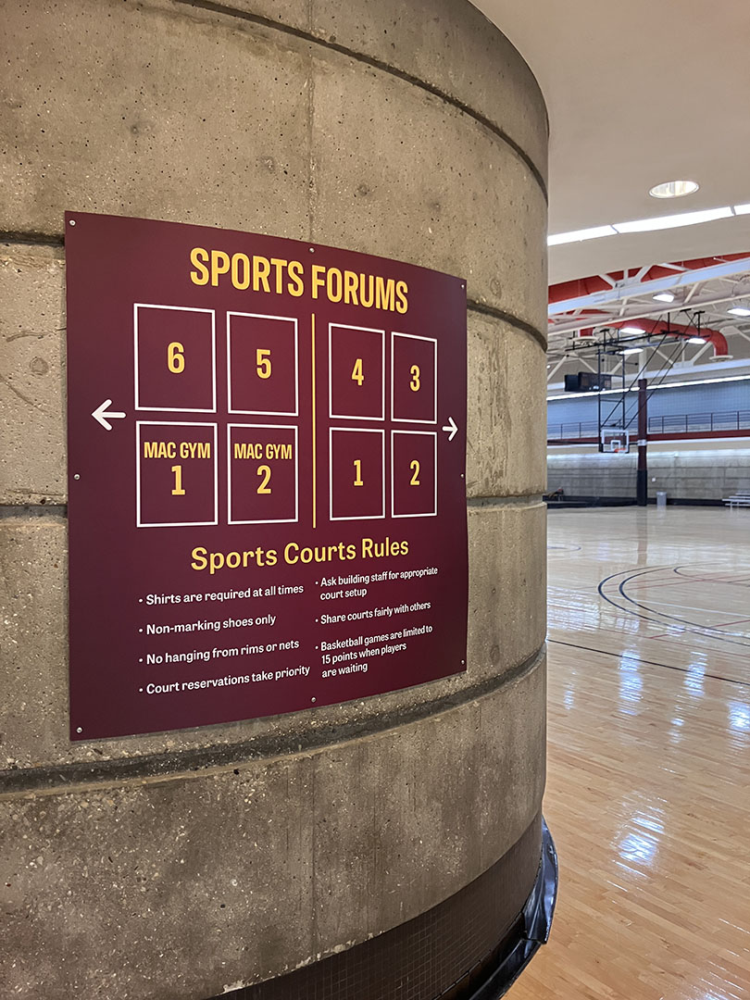
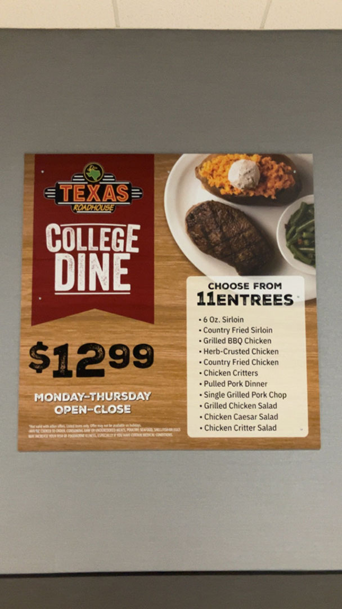
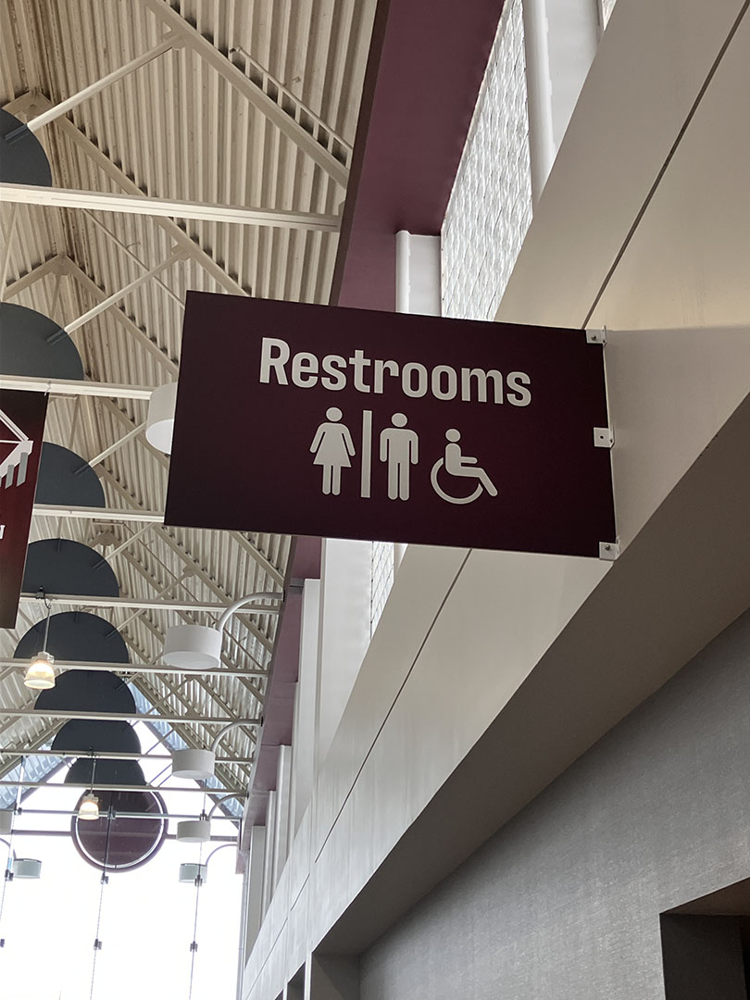
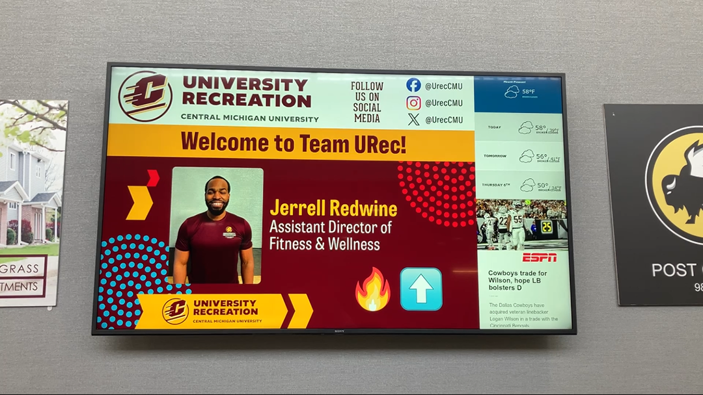
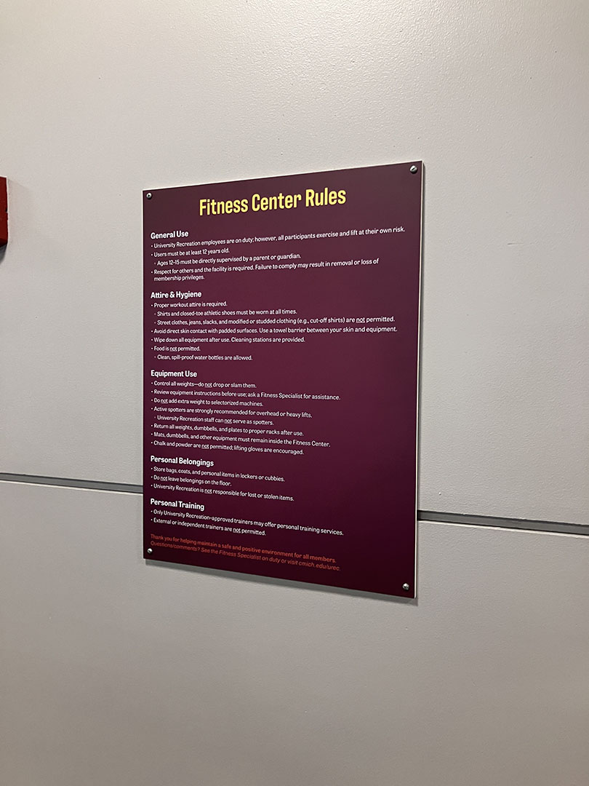
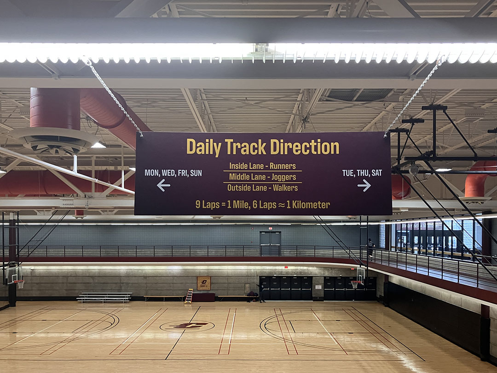

This project showcases my professional work as a graphic designer on the University Recreation Marketing team. For about a year, I have been responsible for creating content that promotes student engagement, intramural sports, signage in the facility, and working with sponsors to create promotional material. The objective is to communicate the department's offerings to a diverse student body in a fast-paced, high-energy environment.

The media included represents the range of content produced for the job, from documenting facilities and student life for marketing purposes, to working on the designing the website and social media graphics. This role requires me to work within a team setting, meet strict deadlines, and ensure all visuals align with the university’s standards as well as meeting client expectations.




Contributions: Event coverage, facility documentation, and promotional material for department promotions. Since these works were created in a team-setting, sometimes multiple people will be working on the same project. Delaney Hutton is the other Student Graphic Designer for University Recreation and the coworker I collaborate most with.
